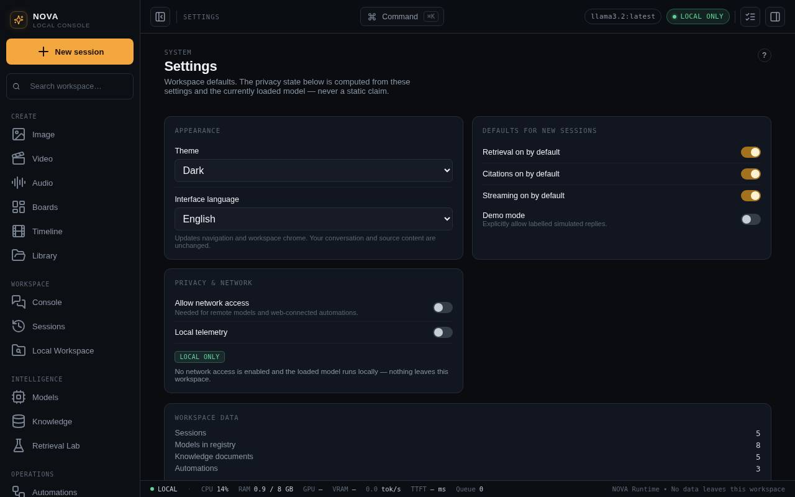

Settings, privacy and your data
Theme, language, defaults for new sessions, demo mode, network access and the privacy state. Where your data lives, how to back it up and how to reset it.

Appearance
- Theme: Dark, Dawn (light) or High contrast.
- Interface language: English or हिन्दी (Hindi). Labels change straight away; your content is not translated.
Defaults for new sessions
Turn Retrieval, Citations and Streaming on or off for new sessions. Each session can still change them in its inspector.
Demo mode allows simulated replies when no model is available. They are always labelled as simulated. Leave it off for real work.
Privacy and network
- Allow network access is off by default. Turn it on for things that need the internet: installing packages, web-connected automations, the collector and remote models.
- Local telemetry keeps usage counters on this computer only. Nothing is sent anywhere.
- The agent browser opens internet pages only while this is on, and even then only websites on its allowed list. See Agent Browser.
The privacy badge is worked out from these settings and the loaded model, not written in advance:
| Badge | Meaning |
|---|---|
| LOCAL ONLY | No network access and a local model. Nothing leaves this computer. |
| NETWORK ALLOWED | The model is local, but automations and collectors may reach the internet. |
| REMOTE MODEL | The loaded model runs on another service, so prompts go there. |
NOVA's server listens only on 127.0.0.1, so other computers cannot reach it. The Provider Browser keeps provider sign-ins separate from NOVA and never stores their passwords.
Where your data lives
| What | Where |
|---|---|
| Database (sessions, models, agents, history) | ~/Library/Application Support/com.brahmini.nova-runtime/nova.db |
| Server log | the same folder, nova-runtime-server.log |
| Everything NOVA makes, as files | ~/Documents/NOVA Library, one folder per day, each with a .json recipe |
| Browser development mode | nova-console/data/nova.db, or the folder in DATA_DIR |
| Workbench history: jobs, policies, budgets, rollbacks, connector requests, agent browser logs | inside nova.db |
| Audit log (encrypted, each entry chained to the one before) | the data folder |
Secrets vault key (.secret-master-key) and resume passphrase (.resume-passphrase, stored hashed) | the data folder, readable only by your user account |
| Agent browser profiles | the data folder, browser-profiles, one per agent |
Back up and restore
Quit NOVA fully (menu bar item → Quit NOVA), then copy the data folder and the NOVA Library. Copy the whole data folder, including its hidden files: without .secret-master-key, saved connector tokens cannot be read again. Restore only to the same or a newer NOVA version, with NOVA closed. Keep backups private: they contain your chats, documents and history.
Reset
Reset workspace data (Settings → Workspace data) deletes every record in NOVA's database: sessions, models, documents, agents, workflows and history. Press it twice to confirm. It cannot be undone, so back up first. Files in the NOVA Library are not deleted, and neither is Workbench history (jobs, policies, audit log), the secrets vault or the resume passphrase. To remove those too, quit NOVA and delete the data folder.